One of Kanye's defining moments in his career was his decision to design shoes. When a sneaker would drop, they would be sold out in seconds. This proved that Kanye can make any product sell. There were polarizing opinions on some of his sneaker designs but as the years went on, these designs became well loved in the sneaker community. This page will look through the many design silhouettes under the Yeezy line.
The Adidas and Kanye collaboration has become notable for its high-end limited edition colorways and general releases offered by the Yeezy Boost sneakers lineup. The collaboration has also produced shirts, jackets, track pants, socks, slides, women's shoes and slippers. The first shoe model Boost 750 was released in February 2015.
One of the main questions asked is "Why are Yeezy shoes so expensive?". The Adidas x Yeexy business model is to only release limited stock of each sneaker. Because of the low quantity, consumers are quick to resell the shoe at a much higher price. Shoppers tend to buy these shoes for $500 dollars and up when the retail price is half the asking price.
 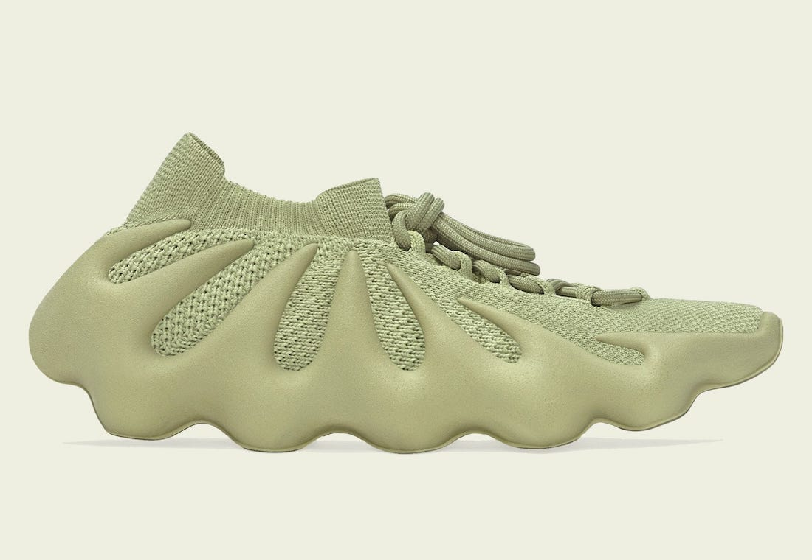
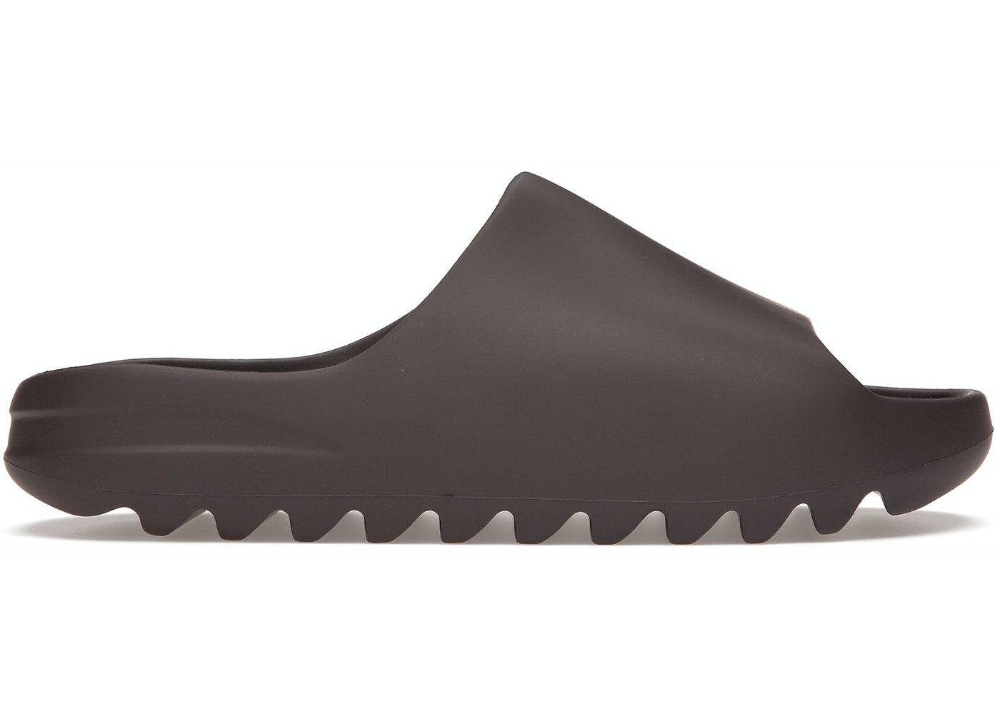
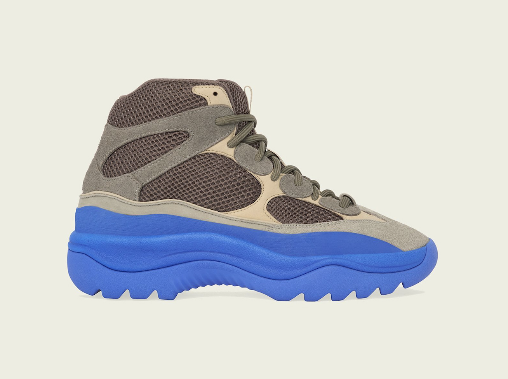
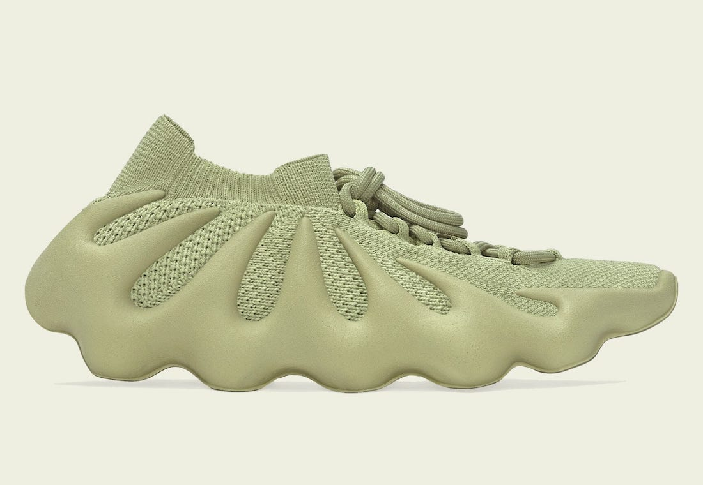
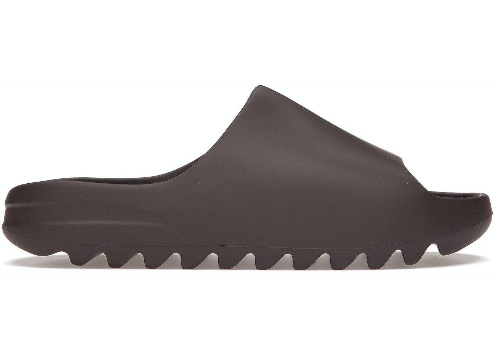
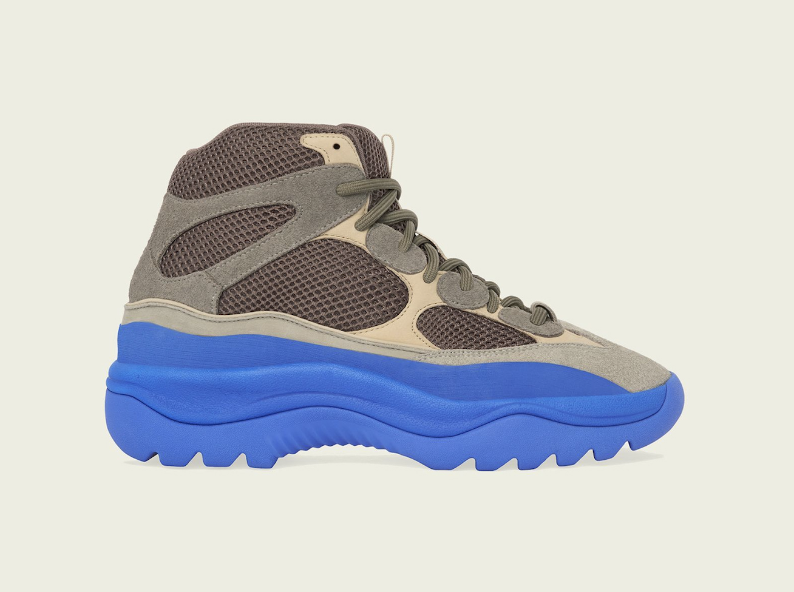
 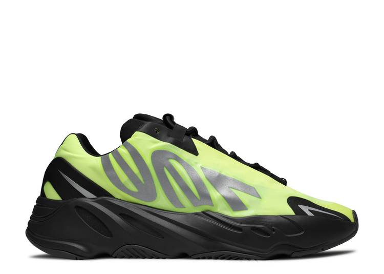
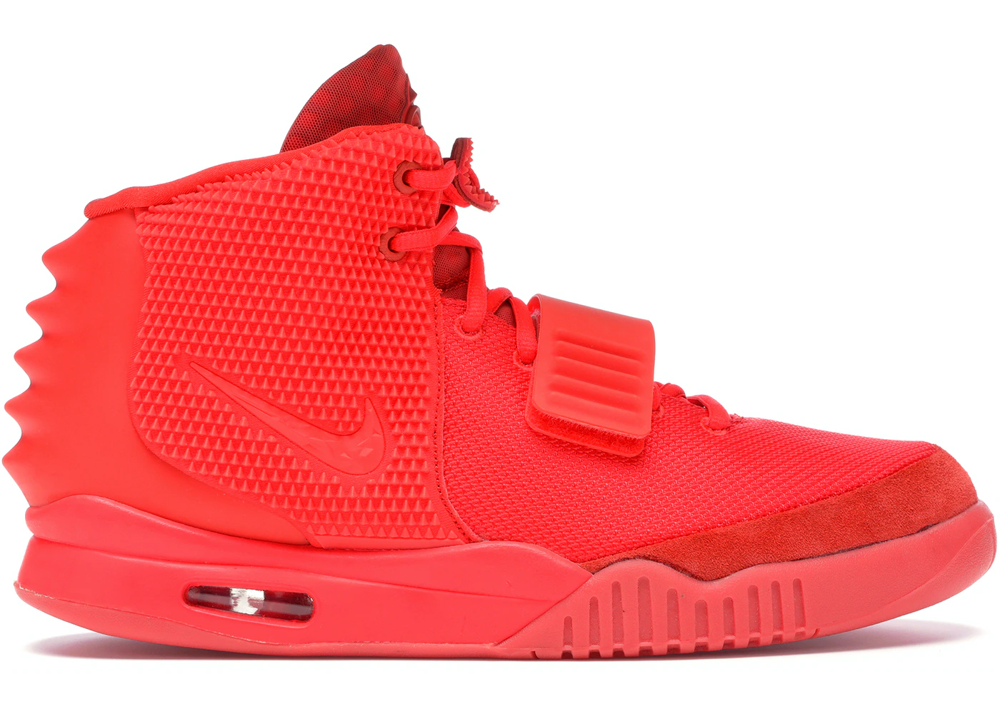
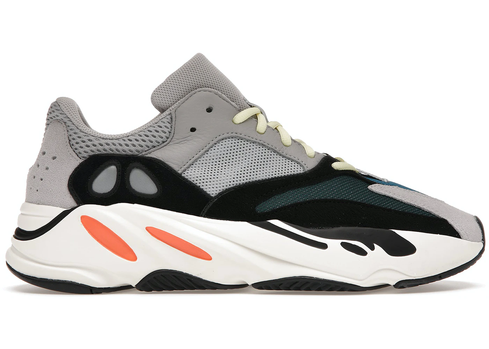
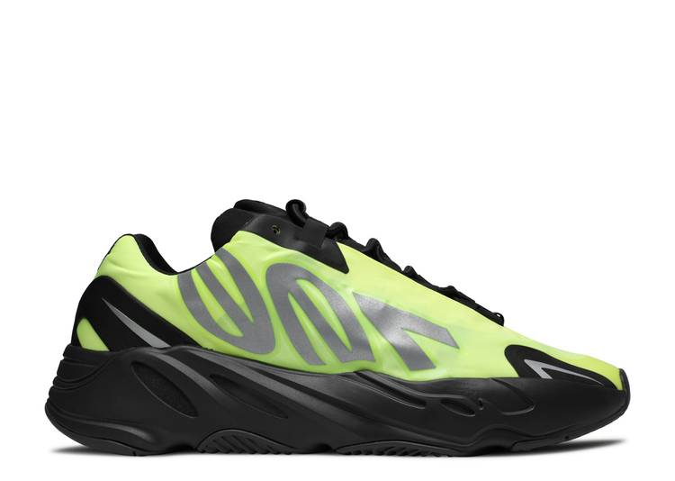
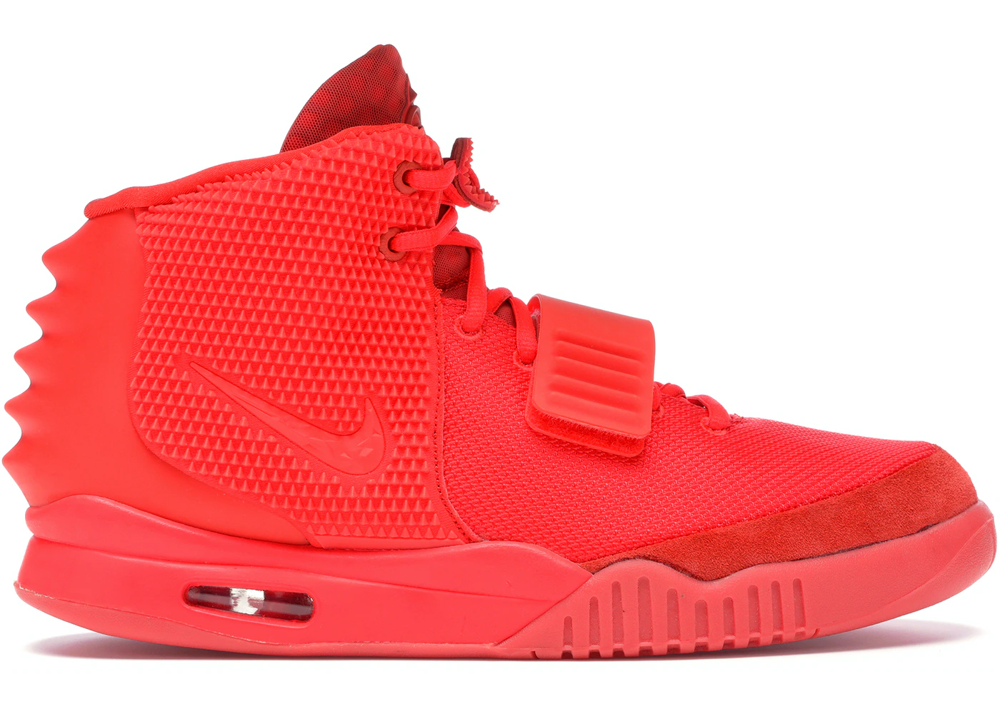
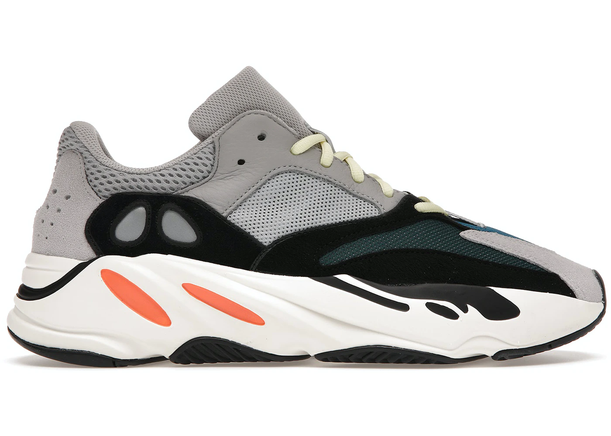